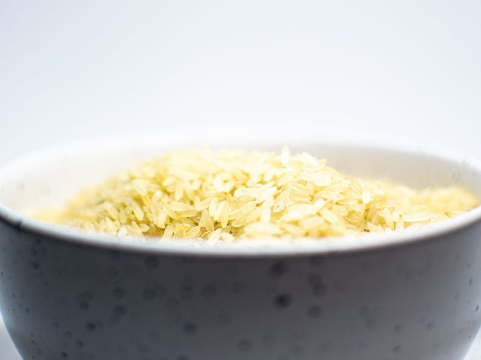
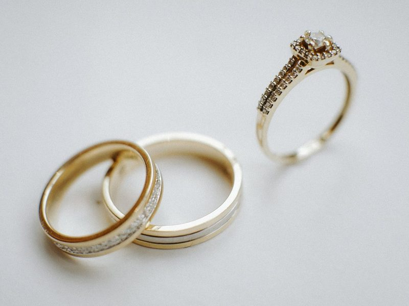
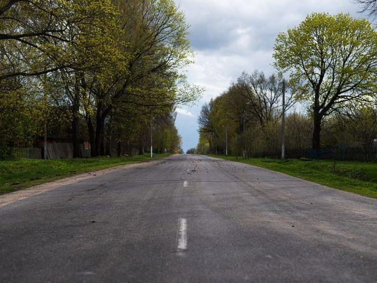
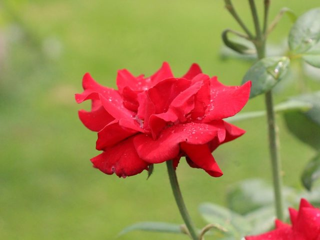
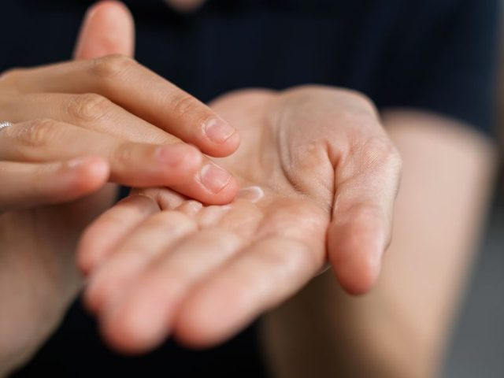
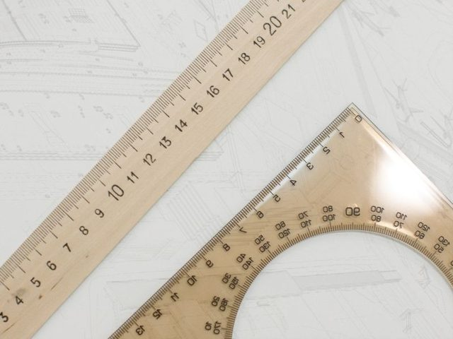
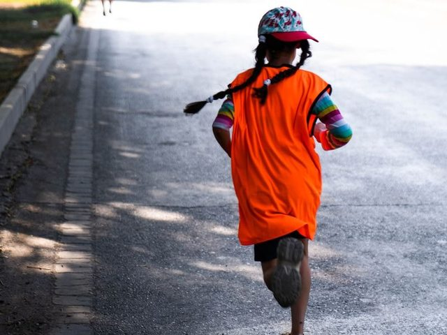

UNIT 40 · VOCABULARY
R 開頭（二）
R-II
31 個單字聽・唸・用
本單元單字一覽
WORD UP「R-II」的 31 個字（rice 到 Russian）。紅色＝要複習，藍色標籤＝WORD UP 標熟記、還要在這裡考對。
ricerichriderightringriseriverroadrobrobotrockrolerollroofroomrootroperoseroundrowroyalrubrubberruderuinrulerulerrunrushRussiaRussian
每個字都有 🔊，先聽發音、跟著唸，再看例句。
單字 1–4

rice
米；飯n.
I eat a bowl of rice for lunch.
我午餐吃一碗飯。
我午餐吃一碗飯。

rich
富有的；豐富的adj.
Oranges are rich in vitamin C.
柳橙富含維他命 C。
柳橙富含維他命 C。

ride
騎；搭乘v./n.
I ride my bike to school.
我騎腳踏車上學。
我騎腳踏車上學。

right
對的；右邊；權利adj./n./adv.
Turn right at the bank.
在銀行那裡右轉。
在銀行那裡右轉。
單字 5–8

ring
戒指；（鈴）響n./v.
The phone is ringing.
電話在響。
電話在響。

rise
上升；升起v.
The sun rises in the east.
太陽從東方升起。
太陽從東方升起。
river
河n.
We went fishing by the river.
我們去河邊釣魚。
我們去河邊釣魚。

road
道路n.
Be careful when you cross the road.
過馬路要小心。
過馬路要小心。
單字 9–12
🦹
rob
搶劫v.
Two men robbed the bank.
兩個男人搶了銀行。
兩個男人搶了銀行。

robot
機器人n.
This robot can clean the floor.
這個機器人會掃地。
這個機器人會掃地。

rock
岩石；搖滾樂n.
He sat on a big rock.
他坐在一塊大石頭上。
他坐在一塊大石頭上。

role
角色n.
She played the role of the queen.
她演皇后的角色。
她演皇后的角色。
單字 13–16

roll
滾動；捲v./n.
The ball rolled down the hill.
球滾下山坡。
球滾下山坡。

roof
屋頂n.
There is a cat on the roof.
屋頂上有一隻貓。
屋頂上有一隻貓。

room
房間；空間n.
Is there room for one more person?
還有空間給多一個人嗎？
還有空間給多一個人嗎？

root
根n.
The tree has deep roots.
這棵樹的根很深。
這棵樹的根很深。
單字 17–20

rope
繩子n.
Let's jump rope.
我們來跳繩吧。
我們來跳繩吧。

rose
玫瑰n.
He gave her a red rose.
他送她一朵紅玫瑰。
他送她一朵紅玫瑰。

round
圓的；環繞adj./prep.
The earth is round.
地球是圓的。
地球是圓的。
row
一排；划船n./v.
We sat in the front row.
我們坐在第一排。
我們坐在第一排。
單字 21–24

royal
皇家的adj.
They live in a royal palace.
他們住在皇宮裡。
他們住在皇宮裡。

rub
摩擦；揉v.
Don't rub your eyes.
不要揉眼睛。
不要揉眼睛。

rubber
橡膠；橡皮擦n.
The ball is made of rubber.
這顆球是橡膠做的。
這顆球是橡膠做的。

rude
無禮的adj.
Don't be rude to your parents.
不要對父母沒禮貌。
不要對父母沒禮貌。
單字 25–28

ruin
毀壞；廢墟v./n.
The rain ruined our picnic.
雨毀了我們的野餐。
雨毀了我們的野餐。

rule
規則n.
Follow the school rules.
遵守校規。
遵守校規。

ruler
尺；統治者n.
Draw a line with a ruler.
用尺畫一條線。
用尺畫一條線。

run
跑；經營v.
I ran to school this morning.
我今天早上跑去學校。
我今天早上跑去學校。
單字 29–31

rush
衝；匆忙v./n.
The MRT is crowded during rush hour.
尖峰時間捷運很擠。
尖峰時間捷運很擠。

Russia
俄羅斯n.
Russia is a very big country.
俄羅斯是個很大的國家。
俄羅斯是個很大的國家。
🪆
Russian
俄羅斯的；俄國人；俄文adj./n.
He is learning Russian.
他在學俄文。
他在學俄文。
重點整理
| 說法 | 中文 | 例子 |
|---|---|---|
| rise / raise | 升起（自己）／ 舉起（東西） | The sun rises. ／ Raise your hand. |
| be rich in | 富含… | rich in protein |
| play a role | 扮演角色 | play an important role |
| be rude to + 人 | 對某人無禮 | rude to the waiter |
| rush hour | 尖峰時間 | during rush hour |
| rule / ruler | 規則 ／ 尺、統治者 | break the rules ／ a ruler |
| in a row | 連續 | three days in a row |
ride-rode-ridden、ring-rang-rung、rise-rose-risen、run-ran-run。
快問快答：中文 → 英文
1米；飯rice
2富有的；豐富的rich
3騎；搭乘ride
4對的；右邊；權利right
5戒指；（鈴）響ring
6上升；升起rise
7河river
8道路road
快問快答：英文 → 中文
1rob搶劫
2robot機器人
3rock岩石；搖滾樂
4role角色
5roll滾動；捲
6roof屋頂
7room房間；空間
8root根
學完了！接下來
複習方法
review
- 回到「📗 單字卡」，按「遮中文」自己考自己
- 再按「遮英文」，看中文說出英文
- 每個例句跟著 🔊 唸一次
準備好了
- 按右上角「📝 前往測驗」
- 測驗錯的題目要訂正到全對
- 訂正完成補送 1 點